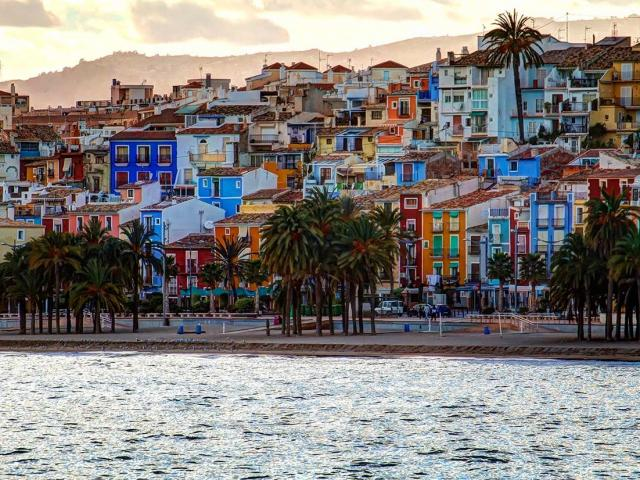

Projecte Migracions'19
Barres i ones
Projecte Migracions'19
Barres i ones
Biografia
Entrevista
Plat
Receta
Alumnes

Ferran Lopez
Té 39 anys i va nèixer en un poble de València. Ell va venir a Barcelona, quan tenia 38 anys per motius de treball, abans en València va treballar de professor i va fer cursos de català, també ha treballat en una empressa de comunicacions. No li va costar molt adaptar-se a Catalunya, encara que no s'acostuma del tot a la manera de relacionar-se de la gent ja que el sentit de l'humor és diferent al de València. Troba a faltar l' olor a pòlvora, en el seu poble es fan moltes festes amb focs artificials, i l’olor a hort, ja que en Catalunya més específicament en Badalona no es planta molt.